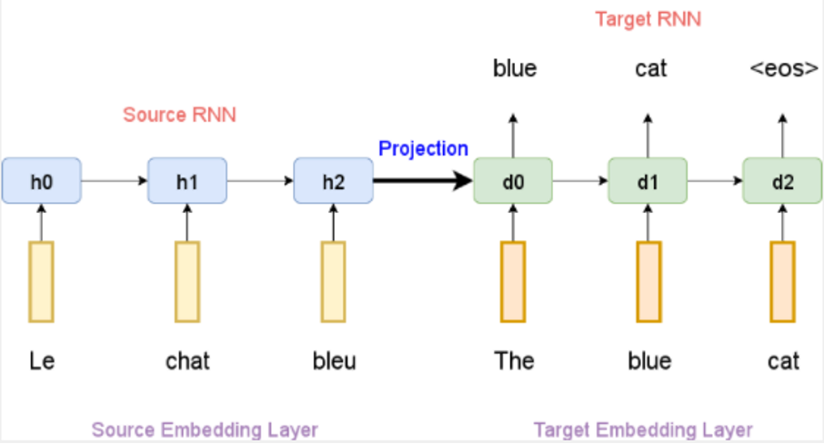
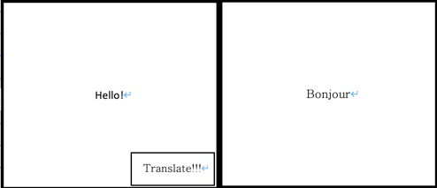

Detailed Description
Aims
Our team's goal is to create translation software. Most translation software is implemented based on artificial intelligence. Our team will also create translation software based on artificial intelligence. By creating such translation software, translation can be done more accurately and conveniently. There are five small goals to achieve the final goal.
First, I will choose a programming language. Natural language processing techniques, the center of translation software, are usually implemented using Python. There are so many natural language processing libraries in Python, and they are also deployed as open source.
Second, it is data collection for learning the translation system. Translation programs using artificial intelligence first require translation data. For example, there may be data in which English and French are paired up. This data allows translation programs to learn. Usually, these data cannot be used directly for learning. A data preprocessing process is required.
Third, it is the embedding of words in the data. Words in the data should be expressed in numbers so that artificial intelligence can understand what the word means. This process is called 'word embedding'. There are several ways to implement Word embedding. We use the most widely used and basic 'word2vec' methodology. Word2vec stores numerical expressions for each word in the neural network. Neural networks will be used a lot in this project. All libraries related to neural networks use Python's Keras library(https://keras.io/).
Fourth, we create the language model, which is the core of this project. There are several methodologies for creating a language model. This project plans to create a language model using good performance and commonly used deep learning. We will implement seq2seq, the most famous language model methodology using neural networks. Seq2seq consists of an encoder and a decoder, where the sentence to be translated is entered, and the translated sentence is output to the decoder. When the language model learns, the learning proceeds using both the sentence to be translated and the data that has been properly translated. When using it, if only the data users want to translate is input, the language model translates and outputs it.
Fifth, the interface with the user will be built based on the translated language model, which is the core technology of the translator. In this project, a translator will be distributed using web. When building a user interface, it will be implemented simply. User plans to make the program easy and easy to use based on a simple user interface.
Sixth, the overall test is carried out. If we enter the sentence before translation, we need to test everything from whether the sentence after translation comes out properly, whether the UI comes out properly, and the site does not go down. If the test is carried out and everything is carried out smoothly, the distribution is carried out.
Plans and Progress
First, we need to secure data sets. In this project, we use the Big Sentence Pairs dataset in Kaggle (https://www.kaggle.com/alincijov/bilingual-sentence-pairs). This dataset has a total of 471MB and is data in which English and other languages are grouped in pairs. First of all, data preprocessing will be required. Data preprocessing eliminates NULL values or data without exclamation marks or punctuations suggesting the end of the sentence. As we preprocess data, we can encounter a number of exceptions. It is necessary to correct these exceptions one by one. These tasks can be very boring and boring, but artificial intelligence is a necessary task because learning based on good data produces good performance.
This preprocessed data should be learned. Data is used twice in total. First, it is used in the process of expressing words in numbers so that they can understand the meaning of words, and secondly, it is used in the form of a sentence pair, the answer to the left sentence is used in the form of a right sentence. First, for the first task, we must tokenize each word. There are many different types of Tokenizer. The following shows that tokenize differently depending on the method of tokenize.
Don't -> Don't, Dont, Don t, Do n't
Jone's -> Jone's, Jone s, Jone, Jones
From the above example, Wouldn’t be meaningfully divided into Do and n't, and John's would be right divided into zone, ', and s. Also, punctuation or special characters should not be simply excluded. Words such as Ph.D and AT&T often contain special characters in themselves. In addition, comma between numbers, tokenize should be performed in consideration of these cases. Tokenizer should be carried out in consideration of these cases. In addition, we can tokenize on a word-by-word basis, tokenize on a character basis, and tokenize on a sub word basis. Tokenizer may be created, but this project uses Tokenizer distributed as a library. We use tokenizer that follows the Treebank Tokenization method in Python's most used library named ‘nltk’(https://www.nltk.org/_modules/nltk/tokenize/treebank.html).
Tokenized words should be expressed in numbers for the computer to understand. This process is called word embedding. This process is carried out with the assumption that 'words in the same place will have similar meanings'. The numerical expression for each word is stored in weights of the neural network. This process is divided into two methodologies, one is the Continuous Bag of Words (CBOW) methodology and the other is the Skip-gram methodology. CBOW modifies the weights of the neural network by inputting surrounding words and inferring the middle word. Skip-gram is similar to CBOW, but the weights of the neural network are modified by inputting the middle word and inferring the surrounding words. The two methodologies are similar, but Skip-gram is known to have better performance, so this project performs word embedding as a Skip-gram methodology.
By performing Word embedding, words can be expressed in numbers. Based on this, the language model proceeds with learning. The seq2seq model, a representative translation language model, will be implemented. The Seq2seq model consists of a Recurrent Neural Network (RNN) and consists of an encoder and a decoder. The RNN is a neural network capable of handling temporal data and may transmit location information of words to the RNN by sequentially inputting words. An example of Seq2seq is shown in the figure below. The blue cells below are encoders, and the green cells are decoders. There seem to be several blue encoder neural networks, but data is input to one neural network in order. Green cells are also another neural network. It implies the meaning of the words input in the encoder and delivers them to the decoder, and the decoder predicts and outputs the words based on this. Decoder proceeds until token is predicted, and eos is an abbreviation for ‘end of sentence’.

Now that the implementation of the core technology is over, we need to create a web for the interface with the user. The user interface of the Web will be configured as follows.

It's a very simple design, but we expect it to be powerful. The sentence to be translated will be entered on the left, and the translated sentence will be visible on the right by clicking the "Translate!!!" button. First, in order to implement this, the sentence to be translated must be transmitted to the web server where the translation language model exists. In this project, all sentences to be translated based on the POST method of the HTTP protocol will be sent to the web server in url. The Web server receives it, inputs it as input of the language model, and reproduces the output. Web server's backend programming language will be Python, just like the programming language of the language model, and will use fastAPI framework or Django framework. The most used language, javascript, will be used in the Frontend language. The server will be the nginx web server software. If any of the team members have a remaining computer that can run this server, use that computer, and if there is no remaining computer, use AWS EC2 to run the server.
Finally, we have to test it. It is expected that a considerable amount of labor and time will be consumed during the test process. It tests whether Word embedding is done well, translation is done properly, server is running properly, and interface is not working strangely. If a problem occurs in the translation language model, the model may learn a little more. Alternatively, more datasets should be obtained, which may be obtained using Google translator api. If a problem occurs on the Web, we should check whether the server's IP number is correct or the port number is correct, and if the problem still occurs, we should take a closer look at the server software. Or it could be a computer problem. It is necessary to check whether the computer is properly connected to the network or whether the RAM capacity of the server is too small to run the server software. In addition, there are too many factors that can cause problems. If a problem occurs, it should be possible to accurately identify and correct the cause of the problem. For this reason, it is expected that the test process will consume considerable time and labor.
Roles
In any field, a clear plan and a clear division of labor are very important, because this allows everyone in the group to have a clear goal and direction to work hard, reduce the pressure on the members of the group, and let They are more focused on one direction. This allows planning to take pictures and proceed further.
Sam Lee’s idea job is Inventory Planner, so his role is Software Operator. His job is to plan the various details of our software, such as what the UI interface needs, investigating what kind of UI customers may like, what elements the UI needs, or what features of our own needs. At the same time, he has to plan our future plans and implement them according to the plan.
Chenxing Zhou’s idea job is a Big data Engineer, so his role is Data Manager. His job is to manage and store data. Our software needs to be logged in before it can be used. This involves user information, such as the customer's name, phone number, date of birth, etc. Our project is an automatic translation software, which means we have a large number of language backend types and vocabulary. These types and vocabulary are large amounts of data. We are likely to add slang after these words to make the translation more humane and colloquial.
Huijoon Jang’s Idea job is a Junior Designer, so his role in our team is Front-end Engineer. His job is to be responsible for the front-end work, including the interactive interface and software pages, to make the app pages as smooth and easy to use as possible, maintain the app front-end problems, and cooperate with the back-end engineers to make the entire app run smoothly without crashing. A bug in the later repair software.
Fei Mo’s idea job is an IT Engineer, so his role in our team is Back-end Engineer. The job of the back-end engineer is to use programming languages such as JAVA, C++ and other programming languages to write the underlying code of the software according to the needs of the software (write according to the programming language you are good at), and work with the front-end engineers to ensure that the software can run smoothly And there is no bug, and the software needs to be maintained later. If there is overload, crash or bug, it is necessary to modify the logic, repair and maintain, and upgrade the system in time.
Zelong Liu’s Idea job is a Technical Engineer, so his role in our team is System Security Engineer.
His job is to protect our software from infringement, prevent others from maliciously entering into our software, attacking our software, leading to some bad situations, for example, the system is maliciously invaded, leading to the leakage of our users' information, etc. happened.
Scope and Limits
According to our Assignment 2, our prototype is Auto-Translator. Although there are already a lot of automatic translation software, such as Google, Youdao and etc., it is still very difficult for us college students to make a mature translation software. Consequently, we should have a detailed plan to plan the entire app. We split the app into several parts to help us complete our entire software step by step.
1. Design the prototype on the paper.
2.Communicate kinds of function should it has.
3.Design an attractive User Interface.
4.Put our ideas into the computer.
5.Combine prototype with programming code to make a complete app.
I searched some information in Google, RMIT Library and other Auto-Translators’ applications. We tried to work on the app. However, it is still difficult for us to make a hole one. According to our ability, we tried to complete step 1 to 4 in this assignment. In order to make a special and perfect Automatic Translation software, we will focus on each of step from our list and try our best to finish each of them.
Create an app of Auto-Translator has many steps. For example, we need to prepare Information Database, Development Application, Programming Language, User Interface, Evaluation Users, Evaluation market and etc. Actually, we don’t have enough time to finish all of steps in the list. For instance, we can Design a User Interface and design what kinds of function should the app have, however, we have no time to complete it.
We do not have enough skills and knowledge to complete this project, but our concept can be partially realized.
1.Our User Interface can be designed and made in the first edition.
2.Can use base programming to achieve a demo to translate English.
3.Some ideas of other function in the App.
4.Find a web platform where you can sell the app.
For us who are the RMIT student, most of our group members are year 1 students. Therefore, we don’t enough and strong to achieve a hole app or a hole prototype. If we plan to complete the development of an entire software, it is an almost impossible plan for us, but we will make a plan and do our best to complete it perfectly within a certain period of time.
In our team, someone wants to be a Big Data Engineer, someone wants to be an IT Engineer, someone wants to be Technical Engineer, someone wants to be an Inventory Planner and someone wants to be Junior Designer. We will do our best to be the person we want to be, and do our best to master the skills we need to master, such as database, programming language, UI design, etc., to contribute to the team.
Tools and Technologies
Automatic translation software to complete our project needs a variety of tools and techniques, we not only introduced into PC and launch mobile side, so we need the Windows operating system computer equipment also need MacOS and tablet system, second mobile terminal we need IOS and android devices for testing and development. First, we must do front-end development, which includes content design and graphics when the software is opened. We used Vaadin for front-end development, which is a Web application development framework and an open-source framework under the Apache 2.0 license. Based on this framework, developers can use Java to develop high-quality user interfaces. Vaadin's biggest feature is a framework for writing front-end pages using the Java back-end language. At the same time, Vaadin also provides HTML front-end components, which can be imported through NPM's front-end package management tool. Vaadin provides rich components such as form input classes, visualization and interaction components, layout classes, and some advanced components. With Vaadin front-end developers easily build all of this and create the look and feel you see on the screen. For mobile, we use IONIC, which is an HTML5 mobile app development framework. Building applications with SASS provides many UI components to help developers develop powerful applications. It uses the JavaScript MVVM framework and AngularJS to enhance the application. Providing two-way binding of data has become a common choice for Web and mobile developers. Ionic is a development framework that focuses on creating apps like native apps for mobile platforms in HTML5 using WEB development techniques. Ionic framework is designed to develop mobile applications from a Web perspective. It is based on the PhoneGap compilation platform and can be compiled into applications for various platforms.
For our back end, we need to set up servers, store and retrieve data, and interfaces to connect those servers to the front end. The back-end development of a mobile application is in every way the same as a web backend. Also, set up the back-end server options AWS, Firebas, or MBaaS for the mobile application. We choose MongoDB for database development. MongoDB is a cross-phase document-oriented database program with access to sources. MongoDB is classified as a NoSQL dataset program that utilizes JSON-like records and arbitrary schemas. A rich and expressive query language will allow us to filter and sort by any field, no matter how deeply nested it is in the document.
We need to store all our records and data, and for that we need a cloud computing platform, and we will use Amazon Web Services. AWS is a subsidiary service of Amazon that provides distributed computing phases and APIs on request to people, organizations, and governments on a measured, pay-as-you-go basis. Amazon Web Services provides reliable, adaptable, and rational management of distributed computing. AWS provides users with a suite of cloud computing services, including elastic computing, storage, databases, and applications.
Testing
We need to be clear about the purpose of project testing. First, we test the execution of the program. Second, make sure the product does what it says or says it's going to do. Third, make sure the product meets performance and efficiency requirements. Fourth, make sure the product is robust and adapted to the user's environment.
In order to test our project, we first conducted a requirements analysis to clarify the scope of the requirements, understand the specific problems that the requirements solve for users, and to what extent the requirements need to be implemented. We need to perform functional analysis on every functional part, page and function point of our product to test whether it can meet the needs of our users. We had to test the software as a user, simulating all the behaviors that a user might do, memorizing every page of the software, every function of the software. When you have a problem and need to mention a bug, the title and content should be clear, concise and unambiguous, write down the steps of copying, preferably with a screenshot of the problem. After each test must write a test report, summarize their problems or think unreasonable place, logic should be clear, the words should be concise. Then do a functional test. We test the links in each step of the program to see if they jump correctly, if there are empty and invalid pages, and if there are error messages returned. It then tests the submission function of the program, whether multimedia elements load and display correctly, and whether the multilingual support displays correctly in the selected language. We also need to do compatibility tests for our programs. First, the client compatibility test, mainly on the page format, font, page display and implementation of various functions were checked. We can use a PC to install multiple operating systems for testing. Through running the test system, various buttons of the terminal are tested. Ensure that the software can be installed on Windows, Mac, Android, and IOS. Then the time performance test is carried out, whether the APP interface is stuck, and then the space performance, APK volume, software operation and occupying device memory resources are tested. In the stability test, whether the automatic translation software still does not crash when other software is used at the same time. The above is our internal test, we will release the public beta after the internal test is completed. We will be invited to translation practitioners, to test our software, and how to upgrade or repair our software to collect their opinions, for an unlimited number of demos, the number of people we want to open beta, the more the better is the best translation practitioners, because in this way can we clear our automatic translation software is an advantage.
Timeframe
Total construction period: 15 weeks
Week 1: Beginning phase
(Group discussion on the way and direction of making software)
Week 2:
For the results of the discussion last week, the tasks are divided, each person is responsible for different parts and roles, and their own research
Week 3:
Design the prototype, prepare the tools and skills needed of each task
Week 4:
Collect and sort out the researched technology and data, discuss the next direction
Week 5:
Complete the report, start to make software engineering, complete the prototype
Week 6:
Complete the prototype, you can implement some functions, the UI interface is ready, start to improve the software
Week 7:
Complete the entire software and prepare for testing
Week 8:
Start testing and fix bugs
Week 9:
Self-test is complete, start user test
Week 10:
The user test is completed, and the test results are collected
Week 11:
According to the test optimize the program
Week 12:
Randomly select 300 of the test users for retest
Week 13:
According to the test optimize the program again
Week 14:
Perform the final round of self-test
Week 15:
Publish software on major platforms
Risks
In our projects, risks are everywhere. Only when we enumerate the risks, we can prepare one by one to avoid risks and prevent emergencies.
1.Since we are developing software, it is very important for programming technology, but programming language is difficult to master
2.When we are developing software, we must prevent someone from maliciously destroying our system. A damaged system may cause all our work to fail.
3.When doing user testing, some people may not like or do not want to use some new software, they will have pessimistic ideas about our software.
4.For new users, designing applications is always scary. When you use it, there will be many different parts that you have never seen before.
5.Someone may maliciously tamper with the program to steal user information
6.Will not use similar software, it may cause the software to crash
Group processes and communication
Intergroup communication is a very important part of a team project. First, at the beginning of the project, each person oversaw their own. The division of labor is a basic process that must be done when collaborating to increase the efficiency of work. Second, communication must be done well. Our team is planning to use slack, most used messenger, as the messenger to communicate in text. It is expected that using Slack will be a good experience in preparation for future software engineering work, so we decided to use Slack. Third, we have to review the code with each other and share the code. For this, a platform called github is used. Github is a platform implemented based on git. Git is a tool that helps manage the version of a project. The method of storing this in a remote server is a platform called github. In fact, it is so widely used that developers say it is difficult to collaborate without github. We decided to use Github because we think it would be a good experience in preparation for future software engineering work. Third, Google Meet. There is a good messenger called Slack, but there is a limit to the only text. To solve this problem, there is a good way to do video conferencing. Google Meet is known to provide stable services, and it is easy to use, so we decided to use Google Meet.